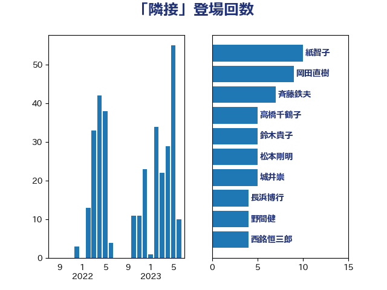

単語「隣接」

| 紙智子 | 日本共産党 | 10 回 |
| 岡田直樹 | 自由民主党 | 9 回 |
| 斉藤鉄夫 | 公明党 | 7 回 |
| 高橋千鶴子 | 日本共産党 | 5 回 |
| 鈴木貴子 | 自由民主党 | 5 回 |
| 松本剛明 | 自由民主党 | 5 回 |
| 城井崇 | 立憲民主党 | 5 回 |
| 長浜博行 | 無所属 | 4 回 |
| 野間健 | 立憲民主党 | 4 回 |
| 西銘恒三郎 | 自由民主党 | 4 回 |
| 小西洋之 | 立憲民主党 | 4 回 |
| 仁木博文 | 無所属 | 4 回 |
| 下野六太 | 公明党 | 4 回 |
| 赤嶺政賢 | 日本共産党 | 3 回 |
| 日下正喜 | 公明党 | 3 回 |
| 岡本あき子 | 立憲民主党 | 3 回 |
| 山本太郎 | れいわ新選組 | 3 回 |
| 山下芳生 | 日本共産党 | 3 回 |
| 宮本岳志 | 日本共産党 | 3 回 |
| 伊波洋一 | 無所属 | 3 回 |
| 上田清司 | 国民民主党 | 3 回 |
| 高良鉄美 | 無所属 | 2 回 |
| 須藤元気 | 無所属 | 2 回 |
| 青木愛 | 立憲民主党 | 2 回 |
| 西村明宏 | 自由民主党 | 2 回 |
| 西岡秀子 | 国民民主党 | 2 回 |
| 芳賀道也 | 国民民主党 | 2 回 |
| 自見はなこ | 自由民主党 | 2 回 |
| 羽田次郎 | 立憲民主党 | 2 回 |
| 竹内真二 | 公明党 | 2 回 |
| 窪田哲也 | 公明党 | 2 回 |
| 福島伸享 | 無所属 | 2 回 |
| 湯原俊二 | 立憲民主党 | 2 回 |
| 渡辺博道 | 自由民主党 | 2 回 |
| 渡辺創 | 立憲民主党 | 2 回 |
| 永岡桂子 | 自由民主党 | 2 回 |
| 櫛渕万里 | れいわ新選組 | 2 回 |
| 横沢高徳 | 立憲民主党 | 2 回 |
| 朝日健太郎 | 自由民主党 | 2 回 |
| 新垣邦男 | 立憲民主党 | 2 回 |
| 斎藤アレックス | 国民民主党 | 2 回 |
| 山本剛正 | 日本維新の会 | 2 回 |
| 小熊慎司 | 立憲民主党 | 2 回 |
| 小池晃 | 日本共産党 | 2 回 |
| 奥野総一郎 | 立憲民主党 | 2 回 |
| 大西健介 | 立憲民主党 | 2 回 |
| 大塚拓 | 自由民主党 | 2 回 |
| 佐藤正久 | 自由民主党 | 2 回 |
| 伊藤岳 | 日本共産党 | 2 回 |
| 今井絵理子 | 自由民主党 | 2 回 |
| 上田英俊 | 自由民主党 | 2 回 |
| 高橋光男 | 公明党 | 1 回 |
| 高木かおり | 日本維新の会 | 1 回 |
| 馬淵澄夫 | 立憲民主党 | 1 回 |
| 青山大人 | 立憲民主党 | 1 回 |
| 鎌田さゆり | 立憲民主党 | 1 回 |
| 鈴木義弘 | 国民民主党 | 1 回 |
| 鈴木敦 | 国民民主党 | 1 回 |
| 鈴木宗男 | 日本維新の会 | 1 回 |
| 鈴木俊一 | 自由民主党 | 1 回 |
| 道下大樹 | 立憲民主党 | 1 回 |
| 近藤昭一 | 立憲民主党 | 1 回 |
| 西野太亮 | 自由民主党 | 1 回 |
| 西田実仁 | 公明党 | 1 回 |
| 西村康稔 | 自由民主党 | 1 回 |
| 萩生田光一 | 自由民主党 | 1 回 |
| 篠原豪 | 立憲民主党 | 1 回 |
| 笠井亮 | 日本共産党 | 1 回 |
| 穂坂泰 | 自由民主党 | 1 回 |
| 秋葉賢也 | 自由民主党 | 1 回 |
| 神谷裕 | 立憲民主党 | 1 回 |
| 石橋通宏 | 立憲民主党 | 1 回 |
| 石井拓 | 自由民主党 | 1 回 |
| 田村貴昭 | 日本共産党 | 1 回 |
| 田村智子 | 日本共産党 | 1 回 |
| 田所嘉徳 | 自由民主党 | 1 回 |
| 渡辺猛之 | 自由民主党 | 1 回 |
| 浜野喜史 | 国民民主党 | 1 回 |
| 浅川義治 | 日本維新の会 | 1 回 |
| 永井学 | 自由民主党 | 1 回 |
| 武村展英 | 自由民主党 | 1 回 |
| 榛葉賀津也 | 国民民主党 | 1 回 |
| 松村祥史 | 自由民主党 | 1 回 |
| 星北斗 | 自由民主党 | 1 回 |
| 後藤祐一 | 立憲民主党 | 1 回 |
| 平林晃 | 公明党 | 1 回 |
| 岸田文雄 | 自由民主党 | 1 回 |
| 山田勝彦 | 立憲民主党 | 1 回 |
| 山本有二 | 自由民主党 | 1 回 |
| 山口壯 | 自由民主党 | 1 回 |
| 小沼巧 | 立憲民主党 | 1 回 |
| 小島敏文 | 自由民主党 | 1 回 |
| 小宮山泰子 | 立憲民主党 | 1 回 |
| 奥下剛光 | 日本維新の会 | 1 回 |
| 堀内詔子 | 自由民主党 | 1 回 |
| 和田義明 | 自由民主党 | 1 回 |
| 吉良よし子 | 日本共産党 | 1 回 |
| 北側一雄 | 公明党 | 1 回 |
| 勝部賢志 | 立憲民主党 | 1 回 |
| 勝目康 | 自由民主党 | 1 回 |
| 八木哲也 | 自由民主党 | 1 回 |
| 倉林明子 | 日本共産党 | 1 回 |
| 保岡宏武 | 自由民主党 | 1 回 |
| 伊藤渉 | 公明党 | 1 回 |
| 仁比聡平 | 日本共産党 | 1 回 |
| 井坂信彦 | 立憲民主党 | 1 回 |
| 井上哲士 | 日本共産党 | 1 回 |
| 中西祐介 | 自由民主党 | 1 回 |
| 上月良祐 | 自由民主党 | 1 回 |
| おおつき紅葉 | 立憲民主党 | 1 回 |